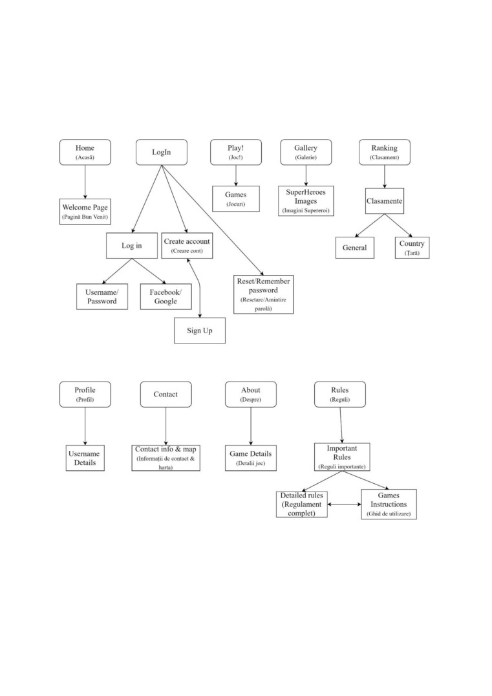
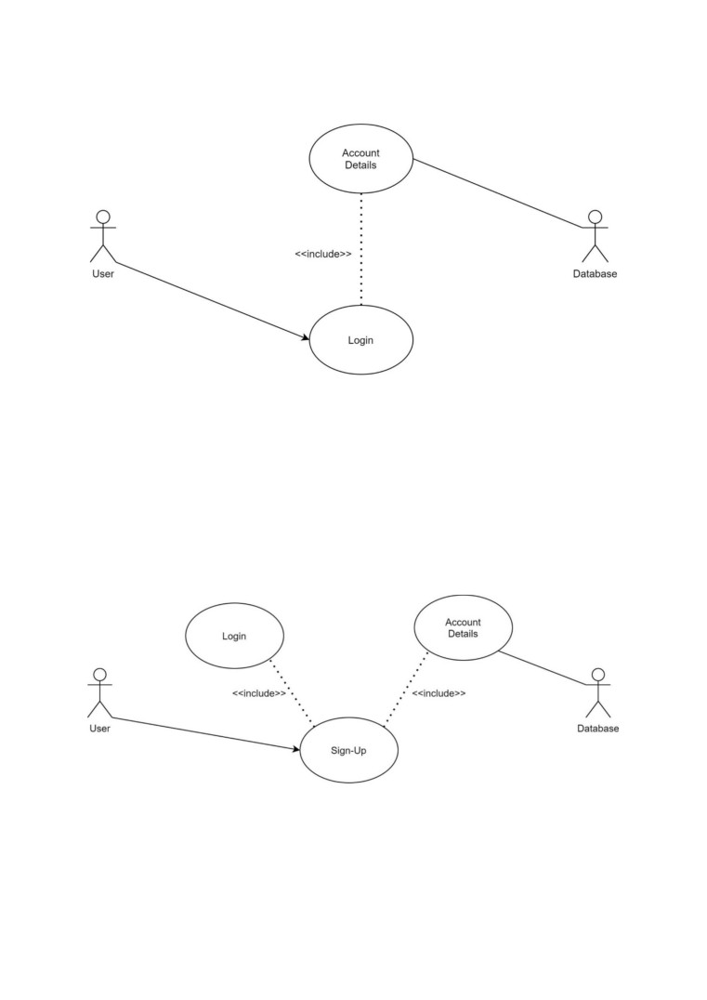
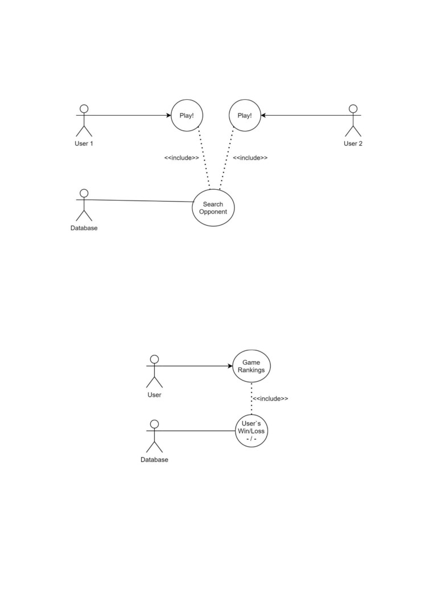
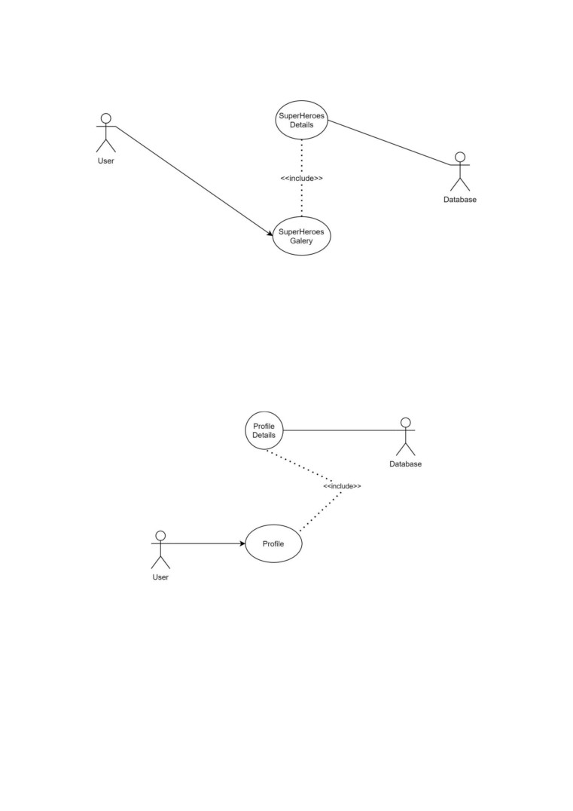
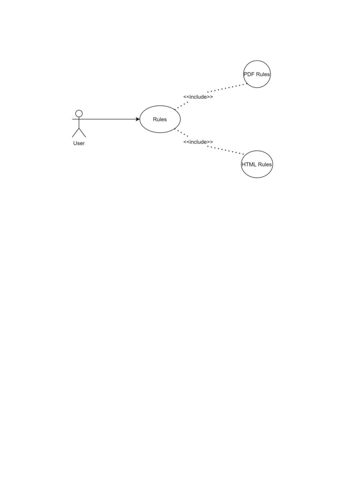

Raport tehnic: SuperHeroes Web Game
Echipa: Teodor Păduraru, Eugen Gavrilovici
Aprilie 2021
1. Abstract
SuperHeroes Web Game reprezintă un joc educativ bazat pe un set de
informații despre super-eroi, asemănător jocului de tip triviador (știi și câștigi),
destinat în mod special copiilor și adolescenților. Jocul a fost integrat într-un site
Web pentru ca un număr cât mai mare de jucători să poată avea acces la el
indiferent de tipul dispozitivului folosit.
2. Introducere
Pentru realizarea în totalitate a proiectului echipei am folosit următoarele
tehnologii: HTML5, CSS3, PHP și JavaScript. SuperHeroes Web Game (SuH)
este o aplicaţie Web care, pe lângă jocul în sine, oferă posibilitatea unui jucător
care s-a conectat să vizualizeze:
regulamentul jocului;
clasamentul cu cei mai buni jucători;
galeria de super-eroi.
1
3. Tehnologiile utilizate
1) HTML5 - pentru structura semantică a informaţiilor;
2) CSS3 - pentru prezentarea și afișarea informaţiilor;
3) PHP - limbajul de programare utilizat principal;
4) JavaScript - limbajul de programare utilizat secundar;
5) AJAX - suită de tehnologii;
6) CSV - import/export de date;
7) SQL - baza de date;
8) API - resurse externe folosite.
3.1 Descrierea tehnologiilor utilizate
HTML - Până în anul 1990 accesarea informațiilor de pe INTERNET era foarte
dificilă și rețeaua nu era folosită decât de un număr restrâns de persoane, în
general oameni de știință. Fizicianul Tim Berners-Lee a devenit celebru deoarece
a inventat ‘link’-urile hypertext. Această idee a dus la dezvoltarea unui limbaj
simplu care s-a impus pe piața mondială. Acest limbaj a fost numit Hypertext
Markup Language, prescurtat, HTML.
Astfel, o pagină Web marcată cu tag-uri HTML are forma generală:
<html>
->
tag obligatoriu
<head>
->
început antet
…
</head>
->
sfârşit antet
<body>
->
început corp
…
2
</body>
->
sfârşit corp
</html>
->
sfârşit document
În cadrul antetului, printre altele, poate apărea titlul documentului (al
paginii Web) specificat de tag-ul <title>:
<title> SuperHeroes Web Game </title>
De obicei, între <head> şi </head> apar definiţii de rutine scrise în limbaje
script (ca JavaScript) pentru a fi siguri că sunt analizate și memorate de navigator
(antetul e procesat primul).
CSS (Cascading Style Sheets) - este un standard pentru formatarea elementelor
unui document HTML. Stilurile se pot atașa elementelor HTML prin intermediul
unor fișiere externe sau în cadrul documentului, prin elementul <style> și/sau
atributul style. CSS se poate utiliza și pentru formatarea elementelor XHTML,
XML și SVGL. CSS3 reprezintă un upgrade ce aduce câteva atribute noi și ajută
la dezvoltarea noilor concepte în Webdesign. Astfel, CSS3 vine cu posibilitatea
designului responsive (CSS nu permite acest lucru), poate fi împărțit în mai multe
module și crește viteza de încărcare a paginii.
PHP - este un limbaj de programare. Numele PHP provine din limba engleză și
este un acronim recursiv: PHP Hypertext Preprocessor. Folosit inițial pentru a
produce pagini Web dinamice, este folosit pe scară largă în dezvoltarea paginilor
și aplicațiilor Web. Se folosește în principal înglobat în codul HTML, dar
începând de la versiunea 4.3.0 se poate folosi și în mod „linie de comandă” (CLI),
permițând crearea de aplicații independente. Este unul din cele mai importante
limbaje de programare Web open-source și server-side, existând versiuni
disponibile pentru majoritatea Web serverelor și pentru toate sistemele de
3
operare. Conform statisticilor, este instalat pe 20 de milioane de site-uri Web și
pe 1 milion de servere Web. Este disponibil sub Licenṭa PHP ṣi Free Software
Foundation îl consideră a fi un software liber.
JavaScript (JS) - limbaj de programare orientat obiect bazat pe conceptul
prototipurilor. Este utilizat în mod special pentru a introduce anumite
funcționalități în paginile web, browser-ul fiind cel care rulează codul JavaScript.
Asynchronous JavaScript And XML
(AJAX) este folosit ca tehnică de
programare pentru a crea pagini web ușor de accesat de către browsere și
utilizează mai multe tipuri de tehnici:
1. Obiect de tipul XMLHttpRequest integrat în browser (pentru a cere date
de la serverul web);
2. JavaScript și HTML (pentru a afișa sau utiliza datele).
Evenimente care au loc la nivelul AJAX:
1. Un eveniment apare într-o pagină web (de exemplu, pagina este încărcată,
se face clic pe un buton);
2. Un obiect XMLHttpRequest este creat de JavaScript;
3. Obiectul XMLHttpRequest trimite o cerere către server-ul web;
4. Serverul procesează cererea;
5. Serverul trimite un răspuns înapoi la pagina web;
6. Răspunsul este citit de către JavaScript;
7. Acțiunea (de exemplu, actualizarea paginii) este efectuată de JavaScript.
4
Comma Separated Values (CSV) - fișier text simplu care conține o listă de date.
Aceste fișiere sunt adesea utilizate pentru schimbul de date între diferite aplicații.
De exemplu, bazele de date și managerii de contacte acceptă adesea fișiere CSV.
SQL - vom folosi o bază de date pentru stocarea și accesarea datelor utilizatorilor
(usermane, parola, e-mail, locația, nivelul, experiența), informațiilor despre
supereroi, clasamente. Pentru a evita SQL injection vom folosi interogări
pregătite în acest sens și vom utiliza parametri care să combine un conținut
dinamic în expresiile SQL.
API - în prima etapă este folosit pentru a afișa harta Google. Vom mai folosi la
dezvoltare și un API pentru cod reCAPTCHA la validarea contului.
5

4. Arhitectura aplicaţiei
Schema logică
6

4.1 Login
În situația în care un utilizator are un cont existent (inclusiv în baza de date)
atunci acesta va avea posibilitatea de a se loga pe site cu ajutorul user-ului și al
parolei aferente. Parola va fi stocată în baza de date criptată pentru a evita SQL
injection, iar introducerea ei pe terminal se va face în modul Hide (parolă codată).
4.2 Sign-up
În cazul în care un utilizator nu poate fi corelat cu un user din baza de date
a site-ului, atunci acesta va trebui să își creeze un cont nou în care să introducă:
user-ul, e-mail-ul și parola.
7

4.3 Play Game
Utilizatorii care aleg opțiunea de a se juca, vor avea posibilitatea să își pună
în valoare cunoștințele despre supereroi împotriva unui alt utilizator (real) care
are un cont deja creat.
4.4 Rankings
Utilizatorii care își doresc să parcurgă clasamentul general și locul acestora
în cadrul clasamentului, vor putea accesa pagina dedicată acestui concept,
denumită intuitiv “Rankings”.
8

4.5 Galery
În situația în care un utilizator vrea să-și actualizeze informațiile despre
supereroi acesta o poate face accesând pagina “Gallery” care conține detaliile
necesare în acest sens.
4.6 Profile
Dacă un utilizator dorește să afle informații despre profilul acestuia (nivel,
experiență necesară până la umătorul nivel, raport victorii/înfrângeri) acesta va
trebui să utilizeze pagina “Profile” existentă în bara de navigație pentru a avea
acces la informațiile dorite.
9

4.7. Rules
Pentru a putea fi la curent cu regulamentul jocului și pentru a avea în
evidență toate detaliile necesare utilizatorul va putea citi 6 reguli importante în
pagina dedicată acestora (“Rules”). Tot în cadrul acestei pagini utilizatorii vor
putea accesa la regulamentul și ghidul de utilizare complet atât în format PDF,
cât și în format HTML. Acestea vor fi dezvoltate în etapa a doua a proiectului.
5. Internaționalizarea
Proiectul urmează să fie disponibil atât în engleză, cât și în română, iar
utilizatorii vor putea alege limba în care să ruleze jocul. Pentru aceasta vom folosi
un API Google Translate pentru traducere automată.
6. Accesibilitatea
1) Responsive: siteul este creat în mod responsive pentru mai multe
rezoluții uzuale ale telefoanelor. Am implementat rezoluțiile standard: 320 px,
375 px, 425 px, 768 px, 1024 px, pentru fiecare HTLM din cadrul proiectului.
10
2) Accesibilitate socială: pentru utilizatorii cu anumite dizabilități sau cu
abilități mai reduse în utilizarea internetului, vom implementa un API pentru text-
to-spech care să ofere un suport vocal.
7. Bibliografie
1) Acu, Călin Ioan - Optimizarea paginilor Web, Editura Polirom, Iași, 2003
2) Buraga, Sabin - Proiectarea siturilor Web. Design și funcționalitate, Editura
Polirom, Iași, 2005
3) Buraga, Sabin (coord.) - Situri Web la cheie. Soluții profesionale de implementare,
Editura Polirom, Iași, 2004
4) Buraga, Sabin; Tarhon-Onu, Victor; Tanasă, Ștefan - Programare Web în Bash și
Perl, Editura Polirom, Iași, 2002
5) Tanasă, Ștefan; Olaru, Cristian
- Dezvoltarea aplicațiilor Web folosind Java,
Editura Polirom, Iași, 2005
Introduction_to_the_CSS_box_model
11